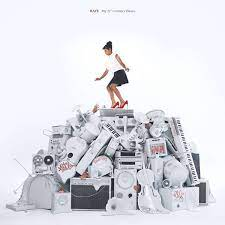

DAMN. COLLECTORS EDITION.
Kendrick Lamar | 2017 | USA
Damn is the fourth studio album by American rapper Kendrick Lamar. Released on April 14, 2017, through
Top Dawg Entertainment, Aftermath Entertainment and Interscope Records, critical accolades followed
including a Pulitzer Prize for Music and the Best Rap Album at the 2018 Grammy Awards.
Lamar assembled numerous artists and producers to produce the album, including executive producer and Top
Dawg Entertainment label-head Anthony "Top Dawg" Tiffith, Sounwave, DJ Dahi, Mike Will Made It, and Ricci
Riera, as well as further production contributions from James Blake, Steve Lacy, BadBadNotGood, Greg
Kurstin, The Alchemist, and 9th Wonder, among others. The album features guest vocals from singer Rihanna
and Top Dawg singer Zacari, along with Irish rock band U2.
The album has been categorized as conscious hip hop, a genre Lamar incorporated on his previous studio
album, To Pimp a Butterfly. The album also incorporates elements of trap, contemporary R&B, and pop. Prior
to the album's release, Lamar released a promotional single, "The Heart Part 4"
Songs of the album:
LOVE. (feat. Zacari)
HUMBLE.
LOYALTY. (feat. Rihanna)
FEEL.
ELEMENT.
SOS
SZA | 2022 | USA
SOS is the second studio album by American singer-songwriter SZA. It was released through Top Dawg
Entertainment and RCA Records on December 9, 2022. The album features guest appearances from Don Toliver,
Phoebe Bridgers, Travis Scott, and the late Ol' Dirty Bastard. SZA worked with a variety of record producers
and songwriters such as Babyface, Jeff Bhasker, Benny Blanco, Rodney Jerkins, DJ Dahi, Ant Clemons and
Lizzo. It serves as the follow-up to SZA's previous album Ctrl.
The album was supported by six singles—"Good Days", "I Hate U", "Shirt", "Nobody Gets Me", "Kill Bill", and
"Snooze". "Kill Bill" became SZA's first song to top the Billboard Hot 100, with all other singles falling
within the top 15. Upon release, SOS received widespread critical acclaim for its eclectic sound and SZA's
vocal delivery; several media publications ranked it as one of the best albums of 2022. To promote the
album, SZA embarked on a North American and European arena tour, the SOS Tour, from February to October
2023.
The album debuted at number one on the Billboard 200—SZA's first to do so—and broke the record for the
largest streaming week for an R&B album in the US.
Songs of the album:
SOS
Kill Bill
Special
I Hate U
Good Days

My 21st Century Blues
RAYE | 2023 | UK
My 21st Century Blues is the debut studio album by British singer and songwriter Raye, released through
Human Re Sources independently on 3 February 2023. The album is Raye's first project following her departure
from Polydor Records in 2021. It was largely co-written by Raye with production handled by herself, Mike
Sabath, BloodPop, Punctual, and Di Genius. The album features guest appearances from 070 Shake and Mahalia.
My 21st Century Blues received universal acclaim from critics, with Variety naming it as one of the best
albums of 2023. It lyrically explores various themes including Raye's struggles with addiction, insecurity,
body dysmorphia, and sexual assault. Spawned by the release of six singles "Escapism" featuring 070 Shake),
topped the charts in Ireland, Denmark and the UK, and entered the top ten in over 20 countries. The fifth
single "Ice Cream Man", peaked at number 69 on the UK Singles Chart, while the sixth single "Flip A Switch"
featuring Coi Leray reached number 35.
The album became Raye's first to enter the charts in various regions. It debuted at number two on the UK
Albums Chart, becoming her first top ten album in the UK.